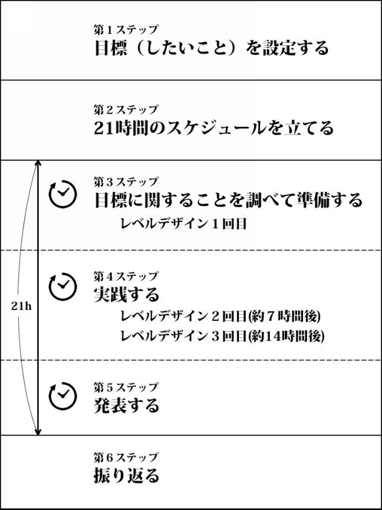
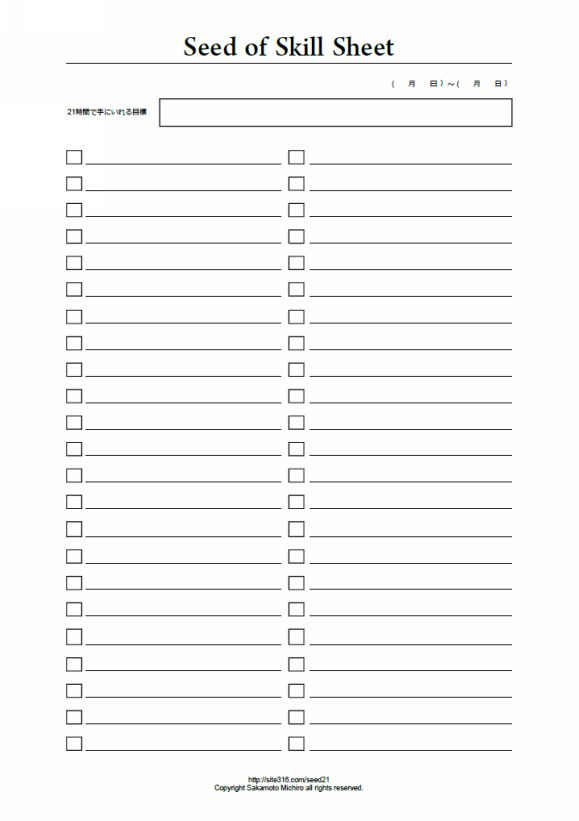
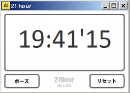
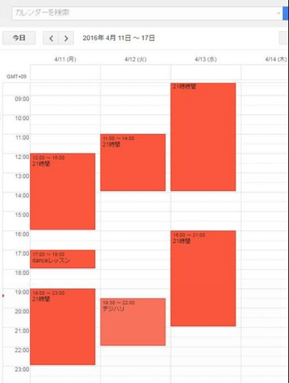
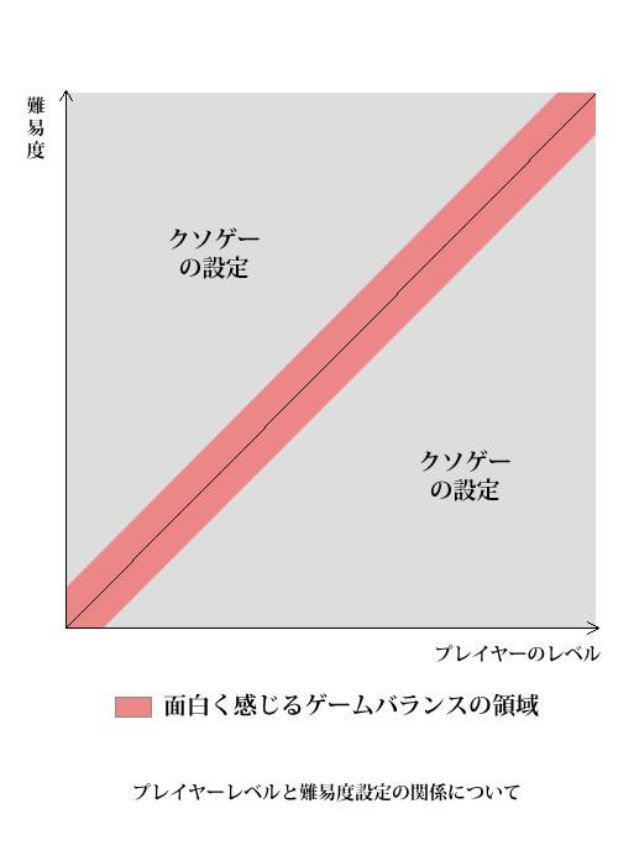

| 自分を変えずに結果を出す21時間理論: デザインスクール講師が教える、苦しまないアウトプットの方法 | |
| 坂本倫朗 | |
| UNKNOWN (2016) | |
私はCG・ウェブのスクールで十年あまり、プログラミングとモーショングラフィックスを教えています。
スクールでは、すべてのカリキュラムの終了時に卒業制作を提出することになっていますが、毎年数名の生徒が課題を提出しないまま学校を去っています。
去っていく生徒たちは、だらしない人ではありません。
その逆で、とても真面目なのです。
真面目すぎるせいで人よりプレッシャーを強く感じて、課題に手が付けられなくなり、いよいよ間に合わなくなって諦めているのです。
期待を胸に入学してきた真面目な生徒が、そんな形で学校を去っていくのを残念に思い続けていました。
自分で決めたハードルが超えられないのは、根性の問題ではありません。
才能の問題ではありません。
そして、勇気の問題でもないのです。
足りないのは仕組みです。
具体的な仕組みを知ると、このハードルを超えていけるようになります。
そう言う私も立派な人間ではなく、熱しやすく冷めやすい性格を持っています。
私はアイデアを出すことが好きです。
アイデアを実行している途中で、他のアイデアを思いつきます。
途中で気移りしてしまうのです。
典型的な三日坊主です。
「どうやったら飽きっぽい私が、大きな成果を出すことができるだろう？」
私は一生懸命、考えました。
その答えは、「熱中している短期間のうちに、小さな結果を出してしまう」ということでした。
「熱しやすく冷めやすい」
ということはネガティブに語られますが、見方を変えると「熱しやすい」というのは長所です。
ごく短期間で一定の成果を出すことができれば、「長期的な成果を達成するまで、常に努力を継続し続けなければならない」というプレッシャーから開放されます。
今までよりストレスが少ない状態で、小さな成功を積み重ねていけるのです。
なにより、休むことが怖くなくなります。
この考えを体系化したものが、本書でお伝えする「21時間理論」です。
「21時間理論」で、あなたに身につけてほしい考えは、次のことだけです。
１．21時間以内に達成する目標を設定する
２．21時間以内にその目標を達成して、成果を発表する
この２つを繰り返すことで、「性格を変えよう」と不毛な努力をすることなく、成果を出していけるようになります。
本書は技術書です。
一時的に気持ちを盛り上げるための本ではありません。
次の質問に理論的に答えることを主題としています。
・なぜ21時間なのか
・どうやって21時間以内に目標を実現させるのか。
・どう準備して、どう取り組むと楽しく取り組めるのか。
・目標に挑戦するときに、つまづきやすいところはどこか、つまづいたときにどう工夫すれば乗り越えられるか。
「21時間理論」の内容に取り組んだとき、あなたは「いつかは成りたい憧れの自分像」に苦しめられることがなくなります。
理想と現実が、別物でなくなるのです。
この本が、あのとき課題を提出できなかった生徒の手に届くことを願います。
著者
逆算の方程式というものをご存知でしょうか。
「夢を叶えるには、実現までの道のりを逆算して、今日やるべきことをすればいい」というものです。
「夢を叶えるには、長期目標から、中期目標、短期目標とわけていって、短期目標に取り組めばいい」と教えられます。
でも、多くの人は、それができません。
私もできませんでた。
多くの人ができないということは、この考えには欠陥があるのではないかと私は考えました。
そして私は、逆算の方程式に五つの欠点を見つけました。
逆算は面倒な作業です。
5年先、10年先までの毎月を想像するのは難しいです。
無理して逆算して綿密な予定を作るほど、その予定が狂った時の修正作業は多くなります。
そして、どんなに頑張っても、予定には変更がつきものです。
それならばと、ざっくりな目標にしてしまうと、その予定は、もはやペースメーカーにはなりません。単なる願いごとになります。
どっちつかずになるのです。
逆算の考え方だと、たとえばミュージシャンが「東京ドームでコンサートをして、お客でいっぱいにしたい」と考えた時、予定の立てようがありません。
「人気を得る」ということが、他人に委ねる部分が大きく、不確定な要素だからです。
ほとんどの目標には、逆算をできない要素を含みます。
このミュージシャンは、まずスキル、表現力が必要です。
最初の段階で不確定なものを逆算することは、無理があります。
「夢には日付をいれるのが大事」と聞いて、手帳を開いて再来年の今日の日付に「南青山のマンションに引っ越す」と書いたとします。
「じゃあ、毎月、十五万円の家賃が必要だとして、来年は月収四十五万円くらいになっていたいね。そうなれるように、今月から資格の勉強を始めようかな。」
こう考えたとき、長期目標は「南青山のマンションに引っ越す」、中期目標は「来年、月収四十五万円」、短期の目標は「今月から資格の勉強を始める」です。
この目標は失敗する公算が非常に高いです。
なぜならば、今日明日で何もやらなくてもいい目標は、緊張感を伴わないからです。
こうした緊張感のなさは、最終目標日まで日にちがたっぷりあると感じることから起こります。
脳は、達成したことの大きい小さいは判断できません。
小さい達成が何度もあったほうが、何度も達成感を感じられます。
そのほうが自信がついていいのです。
ところが、長期「行政書士試験にうかる」、中期「民法を勉強する」、短期「民法の債権を勉強する」といった目標の立て方だと、中期、短期には達成感がありません。
最後に合格するまで一度も達成感を感じないような計画の立て方をしてしまうと、途中の努力が長く辛いものに感じられてしまいます。
欠点その５ 「スケジュール管理」という考えに、そもそも性格の向き不向きがある
スケジュールに縛られるのが大嫌いな人には想像もつかないでしょうが、世の中にはスケジュール管理が大好きな人が、一定数います。
お気づきかもしれませんが、逆算したり、目標を長期・中期・短期に分ける方法は、スケジュール管理が大好きな人が考えたものです。
世の中は、「スケジュールに縛られるのは嫌い」という人が圧倒的多数です。
スケジュール管理の好き嫌いは、性格の根深いところに起因します。
スケジュールが嫌いな人に、スケジュールが好きな人が作ったルールを守れというのは、性格を根っこから変えて頑張れと言っているのと同じことになります。
それは負け戦です。
性格は変えようと思えば変えられますが、無理が大きいです。
今の性格を変えること無く、また、スケジュールに縛られることがなくても、ストレスなくスピーディーに成長できるような仕組みを考えたほうが現実的なのです。
逆算の方程式の欠点をカバーし、無理なく計画を達成するために考えられたのが「21時間理論」です。
この方法は、煎じていえば、「２~３日のうちに、小さい結果を出してしまう方法」です。
長期の目標を決めたら、中期目標には「21時間でぎりぎり達成できる目標」を設定します。
一ヶ月や、一週間ではありません。21時間です。
この21時間の中期目標は、「新たに獲得するスキル」、もしくは「新たな体験を得る活動」に限定します。
学習して身に付ける内容だけです。
他の人からの支援などの、不確定な要素はなにも入れません。
そして、この中期目標を達成するために、21時間でするべきことを細かく分解し、詳細なタスクリストを書きます。
このタスクリストの一つ一つが短期目標です。
タスクリストは一つが30秒でできるものもあれば、一時間でできるものもあります。2時間ぐらいかかってしまいそうなものは、更に細かく分割します。
そして、21時間という制限時間で、タスクリストに書かれた内容を次々と達成していくのです。
21時間とは、毎日七時間をかけて、三日間で達成できる量を基準としています。
三日坊主の私でも、熱中している間に達成してしまえる量です。
この仕組みに従うと、21時間で一つの経験やスキルが得られます。
これらの経験とスキルを積み重ねて、長期の目標を達成するのです。
予定とは狂うものです。
予定が狂ったことを怒ったり、嘆いたりしても仕方ありません。
そこから調整するのが仕事の本質であり、調整するためにどう考えるかが、その人の仕事能力です。
「21時間理論」のスケジュールの立て方は、少し変わっています。
「何日までに絶対に達成しなきゃいけない」というルールではなく、「直近の自由に使える時間の21時間を使って、ひとつのことを達成する」というルールです。
課題は日常の最優先で取り組むものですが、途中で非日常の緊急の課題が発生したら、「21時間理論」の課題は一時停止して、緊急の課題を優先します。
風邪を引いたら寝て当たり前。家族のトラブル、仕事のトラブルは優先して当たり前です。
今までの考え方では、それらは「計画の失敗・挫折」と考えられていました。
こんなバカな話はありません。それはあなたの失敗ではなく、仕組み、システムの失敗です。
トラブルがあったときに予定を繰り越せる柔軟な仕組みのほうが、計画に失敗がないので、諦めずに続けられるのです。
そんなことを言うと、「それじゃいつでもできるから、結局やらないことになるのではないか」と思うかもしれません。
そんなことにもなりません。
「課題を後回しにして、いつやってもいい」というルールではないのです。
21時間の挑戦が終わるまでは、「日常のこと」をすべて後回しということです。
非日常のこと、たとえば、トラブルや病気・怪我といったには、最優先で対処します。
しかし「日常のこと」は、テレビも、ゲームも、居酒屋も全て後回しです。
課題にゆっくり取り組んでもいけません。
21時間の課題は、短距離走のようなものです。常にストップウオッチを携帯してもらいます。
時間との戦いです。
タスクに意識を集中して取り組みます。
21時間という単位を、多いと感じますか。それとも少ないと感じるでしょうか。
私は、21時間という時間を、スキルを獲得するのにふさわしい時間だと考えています。
7～8時間だとできることが少ないのです。一日の体験レッスンでできるくらいの分量は、スキルとは呼べません。
他の人も同じように一日でできるからです。
逆に42時間だと長過ぎます。三日坊主の人は（私です）、熱が冷めてしまいます。
21時間という時間は、小さく感じるかもしれませんが、集中すればいろいろなことができます。想像してみてください。それは１時間の習い事を21回分受けられる時間なのです。
はじめて触った楽器で、一曲弾けるぐらいになるくらいの時間です。シチュエーションを限定すれば、今まで知らなかった外国語もマスターできます。
この時間内を高密度に集中すれば、ごく短期間で新しいスキルを一つ獲得できるのです。
「21時間理論」は、「アンコンフォート・ゾーン」に出たり入ったりできる
「コンフォート・ゾーン」と「アンコンフォート・ゾーン」という言葉があります。
「コンフォート・ゾーン」は、自分にとって居心地のよい現在地の状態を意味します。精神的な「快適ゾーン」とか「安全地帯」というような意味合いです。
「アンコンフォート・ゾーン」は、自分にとって精神的に居心地の悪い状態です。
新しい、よい習慣を作ろうと頑張っているときにつらく感じるのは、精神的なアンコンフォート・ゾーンにいて、不快に感じるからです。
いつのまにか前の悪い習慣に戻ってしまうというのは、前の習慣を続けるほうが精神的にコンフォートゾーンであり、快適だからです。
やり慣れてないことをするのは心地悪いです。
しかし成長するには、未体験で居心地の悪い状態にする必要があります。
ただし、四六時中、居心地の悪い状態にいる必要はありません。
休みも必要です。
自己啓発書で、「良い習慣を作って成長を続けるには、アンコンフォート・ゾーンにいることが重要だ。」
とまでしか書かれてないものがあります。
これでは、「コンフォート・ゾーンに戻ったらお前の負けだ」と言っているように受け取れます。
それは机上の空論であり、間違いです。
現実の挑戦は、コンフォートゾーンと、アンコンフォートゾーンを行ったり来たりします。
時間制限付きの到達目標を立てることによって、アンコンフォート・ゾーンに自らを置きます。
その挑戦は21時間で終わります。終わったら休んでいいのです。
狩りに行くのは、まさにこの繰り返しです。
獲物をとったら、家に戻ってくつろぎます。
もし獲物が取れなかったとしても、真剣に狩りをすれば経験が得られます。
自分で設定したテーマから「次はこうしよう」という気付きと発見が得られるのです。

このうちの第１ステップ～ 第２ステップまでは準備期間です。
第３～第５までのステップを、21時間以内に終わらせます。
第６ステップは、文字通り、振り返りの時間です。
これらは連続して一つのシステムを形成します。ステップのどれか一つだけやってみるというのでは気付きが得られませんので、取り組むときは注意して下さい。
では、各ステップの概要を紹介します。
第１ステップの「目標（したいこと）を設定する」では、21時間以内にぎりぎり達成できそうな、具体的な目標を設定します。
自分にとって魅力的な、ワクワクする目標を考えましょう。
第２ステップの「21時間のスケジュールを立てる」では、文字通りスケジュールを立てます。
今日から先で自由に使える21時間を、この計画に割り当てます。
第３ステップの 「目標に関することを調べて準備する 」では、すでに経験している人や、ネットから、情報を得ます。
それから、必要となる物の購入もします。
第３ステップから第５ステップは、21時間の制限枠の中で行いますので、ゆっくり調べている時間はありません。急いで効率的に調べて準備します。
第４ステップの「実践する 」段階では、多くの困難が待ち構えています。
大変なものを、大変じゃなく思えるようにするためにはテクニックが必要です。
ゲームのように取り組むのです。
私は、ゲームプログラミングを専門領域の一つとしています。
このステップでは、ゲームをデザインする考えを応用して、課題に楽しく取り組む方法をお伝えします。
第５ステップの「発表する 」は、第４ステップまでに実践した経験をまとめて、ブログやフェイスブックなどのSNSで発表します。
アウトプットすることで、自分の考えが整理され、次の目標が生まれます。
そして、アウトプットすることで、自分の影響範囲を拡大することができるのです。
第６ステップの「振り返る」で、自分と対話をします。
振り返って「上手く取り組めた」と思えるなら、そこからさらに挑戦する課題を考えます。
上手く取り組めなかった場合は、「今度はこうしよう」というアイデアが生まれるはずです。
「自分と対話をする」というと難しそうですが、目標とその結果をみれば簡単にできます。
出てきた結果は、正直にあなたを語ってくれます。
やれたこと、やれなかったことの結果を通して、自分と対話する方法を紹介します。
この対話ができるようになると、あなたに「ムダな挑戦」は存在しなくなります。
この「21時間理論」というゲームに挑戦するために必要な２つの道具を揃えて下さい。
それは、シード・オブ・スキルシートというものと、ストップウオッチです。
このシートは下記より無料でダウンロードできます。
http://site316.com/seed21/sss.pdf

使い方については、次の章から順を追って説明します。
このシートが用意できない時は、A4のコピー用紙か、手書きのノート１ページを代わりに使ってください。
PCやスマートフォン、タブレットへのタイピング入力でこのシートの代用することはお勧めしません。
タイピング入力は、速く書こうとした時に、手書きより遅いからです。
私はエバーノートを使って情報や経験を蓄積していますが、急いで考える時や、早く作業をする時はタイピングではなく、手書きにします。
人の考えるスピードはツールに左右されます。
21時間という、時間制限があることをしようとしているのに、わざわざゆっくりな手段を選ぶのはおかしいです。
余談になりますが、ブレインストーミングなどの時も、タイピングでなく手書きでアイデアを書いていくようにすると、時間あたりのアイデアの密度は濃くなります。ぜひとも手書きをお勧めします。
第３ステップから第５ステップまでの時間は、ストップウォッチで測ります。
スマートフォンにはストップウォッチやライフログを計測するアプリがありますが、
スマートフォンアプリはお勧めしません。
電話がかかってきたときや、お知らせ設定が鳴った時にアプリが勝手に切り替わります。
隠れて見えなくなるのです。
絶えず時間の流れを意識するのに、これでは都合が悪いです。
それより、市販のストップウォッチを使うことをお勧めします。
デザインにこだわりがなければ、百円ショップでも買えます。
市販のストップウオッチを使うときは、電池切れに注意して下さい。
パソコンソフトを使いたいのであれば、常に手前に表示できるようなストップウオッチが望ましいです。
パソコン用タイマーアプリを用意したので、こちらをお使いいただければと思います。
http://actorscomputer.com/method21/21timer.air

終了しても途中までカウントした時間を覚えているので、他のパソコン用のストップウオッチより便利です。
次章から、21時間理論に取り組んでいくことにします。
できれば、本を読みながら、実際に取り組んでみてください。
では、「21時間理論」の第１ステップ、目標（したいこと）の設定をしましょう。
永谷研一さんは「絶対に達成する技術（中教出版） 」で、『正しい目標とは、「誰が見ても、達成したかどうかの判断がぶれない」もの 。達成したかどうかが「曖昧」な目標は、単なる「願い」でしかありません』と述べています。
目標が明確であるかどうかで、達成できるかがほぼ決まってしまうのです。
21時間以内に達成する目標は、明確に設定しましょう。
「21時間理論」にとって、誰が見ても、達成したかどうかの判断がぶれない目標を設定するには次のルールを守ります。
（１）ゲームとして遊べるような達成目標を設定する
（２）他人に影響される目標にしない
（３）習慣づくりを目標にしない
（４）読書と授業を受けることを目標にしない
特に（１）が重要です。順番に見ていきましょう。
目標（したいこと）の設定をするときには、必ず「何かを達成する」目標にして下さい。
たとえば「毎日英語の文法を2時間勉強する」
という目標と、
「毎日英語の文法を10ページずつ勉強する」
という目標は、どっちが達成目標でしょうか。
正解は、どちらも達成目標とはいえません（！）。
この二つはどちらも達成の基準があいまいなのです。
ただ時間をかけることは、目標とはいえません。努力目標です。なんとなく机に座って、なんとなく起きているだけでもできてしまいます。
こんな目標では、テンションはだだ下がりです。
ですから、「毎日英語の文法を2時間勉強する」という目標はNGです。
「毎日英語の文法を10ページずつ勉強する」というのも、よくありません。
「10ページやりさえすればいい」という目標は、集中をしていなくても、極論を言えば、テキストをパラパラめくるだけでもできてしまいます。
これも達成目標とは呼べませんのでNGです。
曖昧な目標を掲げて、曖昧なまま課題に取り組んでいるときに、「自分は努力している」と考えるようでは、思考は停止します。
努力目標からはアイデアは生まれないのです。
これは損な目標です。
テレビゲームで言うと、「毎日ゲームを2時間する」
「毎日百回ボタンを押すまでゲームをする」
という目標を立てるようなものです。
そんな目標を立てる人は、ゲームが嫌いな人だと思いませんか。
目標スコアや新しいステージに行くことを狙うから、ゲームは楽しいのではないでしょうか。
目標は、ゲームのとして遊べる達成目標を考えます。
ゲームにしたほうが自然と全力で取り組めます。
ゲームのような達成目標を作るためには、次の3のいずれかを参考にして下さい。
・時間内に、経験したことのないことに挑戦する
・制限時間内で目標スコアを出す
・制限時間内に具体的な作業量をこなす
さきほどの英語の文法を例にして、ゲームのような目標を作るとすれば、
「21時間で英語の文法テキストの、全ての英文を理解する」
としてみます。
どの英文も、見た瞬間にわかるような状態になるまで繰り返すのです。
これだと時間内に超えるべきハードルが明確になって、ゲームとして遊べます。
目標には、「自分でなんとかなるもの」と、「他人に影響されるもの」の２つがあります。
「自分でなんとかなるもの」は、自分ひとりが動けば実現するもの、自分が勉強すれば身につく技術、自分の払える範囲のお金で実現するものです。
「他人に影響されるもの」は、自分ひとりでは習得できない技術、誰かを説得しないとできないこと、自分で払いきれない金額のお金です。
「21時間理論」で達成しようという目標については、「自分でなんとかなるもの」に焦点を合わせます。
特に、スキル・経験の獲得に焦点を絞ります。
これはあらゆる夢を実現する最短ルートのように思えます。
技術やスキルを持ってない人が、お金を借りようとしたり、協力してもらうように他人を説得しようとするのは遠回りすぎます。
逆にスキル・経験があると、説得したりお金を工面できる可能性は飛躍的に高まるのです。
「21時間理論」で目標にするのは、あくまでも「達成目標」です。
「早起きができるようになる」
「毎朝、ごはんをきちんと食べる」
「毎日、帰宅したら掃除をする」
「１日３０分勉強する」
といった習慣づくりを目標にしないでください。
たしかに、よい習慣づくりは、長期的に見てプラスに働きます。
しかし習慣とは人間の基盤を整えるもので、間接的に成長を手助けする性質のものです。
直接的な成長や知恵の蓄積を与えてくれるものではありません。
努力目標だからです。
「規則正しくよい習慣をもって生活して、健康だけど何もスキルを持ってない人」を目指してはいけません。
習慣を作ればそれで成長できるというものではないことを理解しておきましょう。
「21時間理論」の内容は、習慣を作れない人が、性格を変えなくても成果を出す方法の提案です。
習慣を作る方法は、「21時間理論」では扱わないことにします。
はじめて本を読み始めたとき、読書は冒険です。
本を読むことで字を覚え、知識が増え、集中力が養われ、文脈を読む力をつけられます。
自分はどのような作家が好きで、どのような本を買えばいいかが、わかってきます。
また、人の話にも方向性があることがわかってきます。
読書をすることで、他人の話を要旨で聞き取れる「知性」と、自分の考え方以外の考え方もあることを許容する「余裕」が生まれます。
しかし、ある本を何かの役に立てようとして読むのだとしたら、その本を読むこと自体は人生の目的にはなりません。
経済学・経営学の本は、知っているということだけでも活かせるかもしれません。
ノウハウ本や自己啓発書は「スキル」の書です。
ノウハウ本や自己啓発書を読むことには、あまり意味がありません。
本を読んで準備ばかりしても、準備の方法に詳しくなるだけです。
どれか一冊を選びとり、21時間それに取り組むことで状況は変わります。
セミナーについても同じことがいえます。
dots.［ドッツ］などのウェブサイトをみると、デジタル系の無料セミナーが毎日のように行われています。
ストリートアカデミーというウェブサイトでは、写真や料理やヨガなどの講座を検索できます。
イベント情報サイト「ことさが」には、セミナーだけでなく、イベントも多数紹介されてます。
今は無料セミナーが全盛の時代です。無料にしてもネット社会では広告効果があるからです。
そして無料でも人が集められれば、自分の会社に興味のある人のメールアドレスを集めることができて、そこにビジネスチャンスが生まれます。
有料・無料のセミナーが簡単に探せるので、関東・関西にいればセミナーは受け放題です。
参加すれば必ず新しい知識が増えます。
しかし受講してそれっきりにしていたら、受講した知識で可能性が開かれることはありません。
セミナーは達成目標を探しに行くか、日頃の質問をするために出席するというのがよい使い方です。
セミナーに知識を求めたり人脈を作りに行くのは、勉強のピントがずれているように感じます。
知識や人脈を求めるのにセミナー受講は効率が悪く、やがてそれに気づいて飽きてしまいます。
そんなことをしなくても、21時間を掛けて作った小さいスキルをブログに公開していると、人脈は勝手にできていきます。
ゲームのような達成目標が設定できたら、シード・オブ・スキルシートの一番上にある、「21時間で手にいれる目標」の欄に書きましょう。一緒に、始めた日付も入れておきます。
完璧な目標でなくても大丈夫です。このあとも内容を調整するチャンスがあります。
それと、できる限りでいいので、なるべく丁寧な字で書きましょう。
これから何度も目にするので、字を丁寧に書いた方が、読むときに疲れにくいです。
さあ、目標が決まりました。
すぐにでも取り掛かりたいでしょうか。この目標でいいのかとためらう気持ちのほうが大きいでしょうか。
どんな目標でも、書くことができたら第一ステップは成功です。
紙に書いた目標は、貴重な財産となります。
もし、21時間が経過するのを待たずに、この挑戦をやめてしまったとしても、このシートは残しておくことをお勧めします。
「この目標の立て方だと、自分は途中で飽きてしまう」というサンプルになるのです。
そのサンプルは、後に生かせます。
紙に書いた目標を、今後の人生でどのように役立てるかは、第６ステップ 「振り返る」の章で詳しくお話します。
では、第２ステップに進みましょう。
第２ステップは、「どんなスケジュールで課題に取り組むか」を決めるステップです。
それぞれのステップで、目安となる時間配分は次のとおりです。
・第３ステップ 「目標に関することを調べて準備する」（2時間）
・第４ステップ 「実践する」（18時間）
・第５ステップ「発表する」（1時間）
かっこ内に書いた時間は目安の時間です。
実践のあとの発表する時間も含めて21時間であることに注意して下さい。
発表する時間も残しておく必要があります。
第３ステップや、第５ステップの時間が伸び縮みしても大丈夫ですが、全体の持ち時間は、21時間できっちり固定します。
第３ステップから第５ステップで21時間を使います。その21時間を予定表に入れて下さい。
今日を含めて、これから先どれくらいの空き時間が作れるか、カレンダーや手帳をみて確認してください。
そして「空いている時間で近い順」に、21時間を獲得して下さい。
カレンダーには内容を細かく書く必要はありません。ただ時間を確保して欲しいのです。
理想は三日間で７時間ずつの分割です。三日に分散したほうが集中力が続きます。
時間に余裕がある日があれば、２日で終わらせてもいいですが、一日に１２時間以上続けて取り組むのはあまりお勧めできません。人はそんなに長くは集中できません。
三日で終わらせるのが理想ですが、仕事や家事に追われて、まとまった時間が取れないという人もいることでしょう。
その人は、一週間くらいの期間で、21時間のスケジュールを作ってみてはどうでしょうか。
それ以上の日数、たとえば10日間くらいに伸ばすと、途中で飽きてしまうので、お勧めできません。
21時間の内容は、なるべく一気に終わらせられるように、スケジュールを組んでみてください。
ただし、睡眠時間は確保してください。
厚生労働省がまとめた「健康作りのための睡眠指針2014」によると、人間は朝起きてから12時間から13時間くらいの間しか仕事に集中できないそうです。
例えば朝７時に起きて出社する人は、午後８時過ぎくらいまでしか集中力が持ちません。
さらに１５時間経つと、脳は「ほろ酔い状態」くらいにまで集中力の低下がおこるそうです。
夜が更けると、自覚がなくても集中力は落ちていきます。
自覚症状がないから困るのです。
「目標のために眠くても我慢しよう」というのは、この「21時間理論」では勧めません。
「最高密度の集中した時間を作ろう」ということを言いたいのです。
無理して起きていても、作業興奮は続きますが、しだいに集中力は落ちていきます。
毎日継続して取り組む必要があるものは、21時間のスケジュールを入れる前に、あらかじめスケジュールに入れておきます。
たとえば半年後の資格試験の準備などは、先にスケジュールに入れて天引きしておくのです。
その残りの時間から、21時間の課題の時間を作ります。
このように決めておくと、迷う時間を減らせます。
これで21時間は見える化されました。
ちなみに、天引きした「資格試験」というテーマについても、「21時間理論」を使って取り組むことができますが、複数のテーマについて同時並行して、21時間理論のやり方で取り組むことは、あまりお勧めできません。
同時にやる課題が増えれば増えるほど、集中ができにくくなります。のれなくなるのです。
できれば一日一個のテーマに集中したほうが、脳は集中しやすいです。
テーマを切り替えるたびにツールを切り替えたりしていると脳がストレスを感じます。
なるべく脳が余計なストレスを感じにくい仕組みにしたいのです。
スケジュール帳についてですが、私はグーグルカレンダーを使っています。
グーグルカレンダーは、手帳を持ち歩く必要がなく、パソコンでもスマートフォンでも確認できるから便利です。
ドラッグして時間を塗りつぶし、そこにタイトルを入力するという２段階の操作で予定を入れられます。
https://calendar.google.com/calendar

予定の移動もドラッグでできるので、変更が簡単です。
予定を柔軟に考える、「21時間理論」の考えに合っています。
「毎朝６時に起きて、２時間勉強して、８時に食事をして」
というスケジュールを、ぴったり守れる人は、次の話は読む必要がありません。
予定がずれたとき、やるべきことが２つに重なると、どれをやっていいかわからなくなります。
ずれたときに、２つやるべきことがあったら、どっちを先にやるかを私は決めています。
狂わない前提で動くのではなく、予定が狂った時に何を優先するかをあらかじめ決めておくのです。
ずれる前提で、先手を打っておきます。
あまり褒められた話ではないことは知ってます。
予定が狂うことより、予定が狂って戸惑っている時間のロスが大きいので、ここは割り切ります。
戸惑っている時間は、工夫次第でゼロにすることができます。
寝坊してもしなくても、私は次の順番でこなします。
第一位 緊急時の対応
第二位 毎日取り組むこと
第三位 21時間で挑戦すること
第四位 飲み会、お茶会、食事会、テレビ、映画、ゲーム
この順番でやっていると、遅れは取り戻せます。
「どうしようか、何からやろうか」と迷っていると、取り戻せません。
21時間のテーマに取り組む時間は絶対に作れます。それまで１位と２位に、淡々と取り組むことです。
しかし、４位と３位をひっくり返すと、21時間の達成目標は永遠に終わらないことになります。
緊急で対応する必要があることのほとんどは、４~５時間で片が付くものです。
これらを後回しにすると、何をしても集中が奪われるので、早く片付けたほうが得です。
この順位付けが気に入らないのであれば、ご自身で自由に変えてください。
重要なのは、上記のことに関して1秒も迷わないように「順位を決めておく」ということです。
その都度決めるのでなく、あらかじめ決めておくことが大事です。
この第３ステップから、ストップウォッチを押して、21時間をカウントスタートします。
ここまでの時間をどんなにゆるく過ごしていてもかまいません。
しかし、ストップウオッチを押すと同時に、条件反射で俄然、集中するモードに切り替えます。
サッカーの試合開始の笛がなったと想像して下さい。プレイヤーがなんとなくボールを追いかけるような、だらだらのサッカーをしても楽しめません。今この瞬間から超真剣にやります。
テレビをちら見している場合ではなくなります。SNSを覗いている場合ではありません。
ながらでなにかをやるときの脳は、楽ですが、それは集中する気持ちよさとは次元が違います。
これから先しばらくは、超集中の時間です。
21時間を最後までカウントし終えるまでは、ストップウオッチはリセットしないでください。
21時間でやりきるという意識をもつためです。
休憩するときは一時停止します。
再開するときに、スタートして集中します。
こんな風に、一時停止と再生のみを繰り返していきます。
これによって、21時間の残り時間がいつでも把握できます。
21時間で取り組む課題について、調べて準備しましょう。
すでに21時間のカウントは始まっているので、のんびり調べて入られません。
「そもそも調べてからじゃないと、何をしたらいいかもわからないじゃないか。なぜこのタイミングで急がせるんだ」と思うかもしれません。
調べる時間もタイムリミットに含めているのには理由があります。
それは、調べることで、何かをやった気になってほしくないからです。
ウェブデザイナー志望の生徒達は、遅い時間までスクールで調べ物をしています。
たくさん調べて、私に会うたびに「このようなページがあった」ということを報告してくれます。
情報を仕入れることで、スキルが上がっていくと考えているように思えます。
実際は、いくら調べたところで、できるデザインの種類を増やさないことには、優秀なデザイナーやクリエーターにはなれません。
生徒さんにかぎらず、いつまでも時間を区切らずに調べ続ける人は多いです。
そんな人はまず、情報の集まり方の性質を知っておく必要があります。
情報を探していると、だいたいは直接役立つ情報が２、３ページくらい見つかって、ちょと役立つ情報が２０～３０ページくらい見つかります。
直接役に立つと思われる２，３のページには、自分がほしい情報の七割から八割くらいが載っています。
ちょっと情報が足りないこの状態で、調べるのをやめるべきです。
明確な達成目標と時間設定がないと、百パーセントの情報を集めようとして、ちょと役立つ情報が書いてある２０～３０のページも読みふけってしまいます。
これで時間はどんどんなくなります。
ちょと役立つ情報は読まないほうが、そのぶん経験値が速く上がります。
それに、脳は「情報に際限がない」と感じると、それだけで疲れます。
調べる時間にも、絶対に制限時間が必要なのです。
情報が百パーセント集まることを目標にしないで下さい。
七割から八割の、本当に必要な情報を素早く集めて、次の「実践する」ステップへ向かいましょう。
短時間で効率的に情報を集めるために、調べる内容は以下の内容に絞ります。
（１）やろうとしていることの全体像について
（２）どの方法を使ってどこまでやるか
（３）道具は何が必要でどこで買えるのか
まず全体像を速く掴みましょう。
21時間でできることは限られています。しかし全体像を掴んでおかないと、判断が遅くなり、そのぶん時間をムダにします。
例えばプログラミング言語を学びたいと思っても、世の中のプログラミング言語の種類は膨大です。
すでに過去の遺産となってしまっている言語もあります。
図書館から、過去の遺産となったプログラミング言語の本を借りてきて勉強をするのは、時間がもったいないです。
この状態は、「木を見て森を見ず」の典型です。
全体像を素早くつかむのに、「ネイバーまとめ」などのキュレーションサービスを使うと便利です。
たとえば乗馬を始めたい時、"乗馬 まとめ"とグーグル検索してみます。
そうすると、「神奈川県のおすすめ乗馬クラブまとめ【初心者・体験乗馬】」、「都内から出発して乗馬し、日帰りができる牧場まとめ」などの記事がみつかります（２０１６年４月現在）。
大抵のことはキュレーションサイトに載っているので、これらの記事を２，３読むことで、すばやく全体像を掴むことができます。
ただしこれらの記事はプロのライターが書いているものは少なく、やや信ぴょう性に欠けます。
あくまでも全体像をすばやく理解するのにとどめましょう。
記事にある情報を使用する場合は、情報の裏を取る必要があります。
全体像が掴めると、実現方法がたくさんあることに気がつくはずです。
「なにを、いつ、どのようにやればできるのか」という情報です。
どれが一番信頼が置けるか、どの方法でやっている人が多いかを判断します。
読んでもわからない方法や言葉で説明してあるものは避けます。それはサービス精神が欠けています。
ウェブ・サイトが長く更新されてないところや、壊れているところも除外します。
最後は気分が良さそうかどうかで選びます。
電話の対応の感じも、参考になります。
道具が必要であれば、購入しましょう。
服や靴など、身に付けるものは難しいですが、それ以外のものについては、ネットで買えるものであれば、ネットショッピングで購入するのが一番の時短になります。
頼んだものを当日届けてくれるサービスもあります。
ネットショッピングについては、よく知らない会社から買わないようにして下さい。
ネットショッピングに詳しくないのであれば、アマゾンや価格ドットコム、楽天、ヤフーショッピングなどに掲載されている商品をお勧めします。
今、もしお金が惜しくてためらうなら、その目標は保留です。
その目標は、そんなにやりたいものではないのです。
道具を使うのであれば、その準備をしましょう。
道具の使い方を調べましょう。
すぐに使えるように整えましす。
本であれば、５秒で開いて使える場所に置きます。
ピアノであれば、５秒で蓋をあけて弾けるようにしておきます。
パソコンソフトであれば、インストールをして、ショートカットを作ります。
どんな内容でも、スムーズに作業、練習ができるように導線を作ります。
「何かをどかさないと始められない」「ちょっとものを探さないと始められない」というのは、21時間のうちの何分かを無駄にするだけでなく、脳にストレスを与え、楽しい気分を奪います。
そういったストレスは小さいですが蓄積するのです。
ストップウオッチは、いつでも押せる場所に置くか、首にかけます。
シード・オブ・スキルシートを置く場所も決めておきましょう。
クリアファイルに入れて、５秒以内に取り出して書くことができる仕組みを作ります。
21時間はあっという間です。ムダに考える時間を１秒でも詰めたいのです。
ファイルを机に寝かせておくと、他の資料の下になった時に、探すことになります。
ファイルを探す時間は、制限時間の無駄使い、人生の無駄使いです。
私は、右側の本棚の一番端にこのクリアファイルの定位置としています。
５秒でファイルが取り出せて、書き始められる位置です。
達成目標と、調べた内容にずれがあるときの調整（レベルデザイン１回目）
調べていると、当初予定していたことより魅力的なものが見つかるかもしれません。
あるいは、
「21時間では到底できっこない。」
「21時間も使う内容ではなかった。」
ということになるかもしれません。
予定に誤算が生じるということは、慣れていないことにチャレンジしている証でもありますので前向きに考えましょう。
ここで一度、達成目標を見直します。
もし、調べているうちに、もっと魅力的なテーマが見つかったなら、テーマを変えて下さい。
テーマを変える必要はないが、やろうとしている量が多すぎて21時間では終わりそうにないという場合は、量を調整します。
「21時間で論文を１本書き上げる」という目標が無理だと思えたら、その途中までを目標にして「21時間で論文の骨子を書き上げる」というように変更するのです。
逆に、やろうとしている量が21時間に対して少なすぎる、時間があまりそうだというときは、密度を濃くします。
21時間で達成する目標を２つに増やすのでなく、一つのことをより深く掘ることに時間を使います。
「より詳細に調べて、ブログに情報を提供する」
「細かい資料を作って販売してみる」
「誰もやってない領域まで試してみる」
タスクの密度を増やすと、あなたの専門性は高まり、あなたのスキルが世の中で求められる、あるいは面白いと思ってもらえる可能性が高まります。
シード・オブ・スキルシートの「21時間でてにいれる目標」欄は、上下に余白があります。
余白に、修正した目標を書き込みます。このときも、なるべく丁寧に書いて下さい。
目標を変更した時も、前の目標を消しゴムで消したりせずに、その枠の上に記入しておいて下さい。
しつこいですが、第６ステップ「振り返る」のときに有用な資料となります。
実践を始める前に目標の量を調整するのは、これから行う２１時間の過程を一つのゲームのように考えて、そのゲームがバランスのよい面白いゲームになるように調整するためです。
ゲームを面白くするためにバランスを調整するいう考えは、ゲーム業界では「レベルデザイン」といいます。
レベルデザインは、この21時間理論でも重要なポイントです。
このあととの第４ステップでも２回、レベルデザインをするチャンスがきます。
そう、「21時間理論」では、全体で３回、レベルデザインをすることができるようになっているのです。
第４ステップで再登場したときに、さらに詳しく説明することにします。
第３ステップの最後は、タスクリストを作ります。
タスクリストとは、やることを箇条書きにしたものです。
シード・オブ・スキルシートには、たくさんのチェックシートから成り立っています。
ここに、目標達成までに必要なタスクを細かく分けて書いていきます。
ここも、なるべく丁寧な字で書いて下さい。
字が汚いものを長時間みると、脳は疲れます。
とにかく、脳が余計なことを考えず、タスクに集中するようにしてあげましょう。
タスクリストの一つ一つは、何をやればいいかが一目瞭然でわかるように具体的に書いて下さい。
「ダンスのアルゼンチン・タンゴのレッスンをする」だと何をしていいかわからないです。
「リベルタンゴ という曲の最初の４小節のシャドーを１０分繰り返す。」と細かく書くと、何をしたら良いかすぐに分かります。
このように「何をしたら良いかが、すぐにわからない」タスクは、細かく分け書いていないのが原因です。
こんなリストが山積みになると、小さいストレスが積み重なって段々と面倒になってきます。
ＮＬＰと呼ばれる心理学の分野では、問題を複数の要素に分化することをチャンク・ダウンといいます。
難しい問題を簡単にするためのテクニックです。
チャンクとは、「かたまり」の意味です。
タスクリストを詳細に分けて書くことでチャンク・ダウンができます。
難しいと感じていたことが実際に難しいことはあまりありません。
ほとんどは、具体的に見えていないだけです。
細かく書いて見ると簡単に感じられるようになります。
これでスピードがあげられるのです。
第4ステップでは、シード・オブ・スキルシートに書かれたタスクにとりかかりましょう。
上から下の順番で、片っ端から一気にやります。
すでにやれたこと、これからやる予定のことに気移りしていては疲れます。
「どれからやろうかな」と考える時間は全くのムダな時間です。迷うことが１秒もないように、上から順にやりましょう。
実は、予定表やタスクリストというのは予定に間に合わせるために使うものではなく、他のことを忘れて一つに集中するためのものです。
GTD（Getting Things Done、ゲッティング・シングス・ダン）という個人用のワークフローの管理手法がありますが、これも、全てを覚えておくストレスから開放されることを目指している仕組みです。
家の鍵をかもしれないと心配しながら仕事をすると、いつも以上に疲れたことはないですか。
何かを「忘れてはいけない」と考えながら、別のことに取り組むことは、脳のエネルギーを空費するのです。あなたを無駄に疲れさせるのです。それでは好奇心も枯れてしまいます。
「全部忘れても大丈夫だ」という仕組みを作ったことがないのであれば、あなたの脳はまだ一度も全開で動いたことがないのです。
忘れても良い仕組みを作ります。そのために、予定表とタスクリストを使います。
予定表とタスクリストに書いてあることは、忘れても、書いてあるのを見れば良いので大丈夫です。
忘れても大丈夫という仕組みは、驚くほど日々を快適にします。
なにも覚えておく必要がなくなると、余裕も出るので好奇心も湧いてきます。
全てを忘れて、シートの中のただひとつのタスクに集中しましょう。
実際にタスクリストに取り組んでいると、必要だけど忘れていた、あるいは、やりながら必要になった新たなタスクが発生します。
上手くチャンクダウンできてなくて、途中で２つや３つに分解されるタスクリストもでてきます。
消えていくタスクリストより、増えていくタスクリストが多くなるかもしれません。
でも、その状態が普通です。
その状態でうまくいっています。
先を歩いたから見えてきたことです。
迷わず、最下段にどんどんタスクリストを追加してください。
そして一気に片付けましょう。
スポーツアニメで、「ゾーン」と呼ばれる集中状態に入った様子が描かれたものがあります。
プレイ中に覚醒した選手の眼は光り、全てのプレイヤーの位置と動きが把握できる状態になります。
そんなアニメを見ていると、ゾーンというのが特別な才能に思えるかもしれません。
しかし、ある条件が揃えば、誰でも体験することができます。
その条件とは（１）達成目標が適正で、（２）そこに制限時間があることです。
目標が高すぎても低すぎてもゾーンの状態を作るのは難しいです。
また、時間を区切らないと、ゾーンの状態は訪れません。
「21時間理論」の設定は、この２つの条件を揃えられるので、ゾーン状態を作り出すことが可能です。
割と簡単に体験できます。
ゾーンに入ると、ワクワクし、少し興奮した状態になります。
集中力が研ぎ澄まされます。
脳波では、シータ波が出ている状態です。
ゾーンに入るととても気持ちがいいです。
この状態になると 周りがどんなに騒いでも関係ありません。
しかし、人に話しかけられて、それに返事をするのはとても面倒に感じます。
脳波を変えたくないからです。
この状態をキープするのは幸福です。
仕事も趣味も、やり過ぎます。
多少手が痛くても、手を止めたくないのです。
ご褒美のスイーツは必要なくなります。
スイーツをご褒美にしなければ頑張れないような目標は、達成目標と時間設定が失敗しています。我慢して遊ばないと、到底やってられない、つまらないゲームをやっているのです。
また少し、ゲームの話をします。
テレビゲームは、最初から最後まで簡単だとつまらないです。
逆に、最初から最後まで難しくても、面白くありません。
途中から急に難しくなるのも、難しさが途中で頭打ちになるのもゲームとして成り立ちません。
ゲームの最後まで、自分のレベルに合わせて、自分のレベルよりほんのちょっと難しい状態が続いていくのが面白いゲームです。
「あとちょっとだけ頑張れば進めそうだ」と思えると、ついつい遊んでしまいます。
第３ステップでも一度少し紹介しましたが、ゲームを遊んで楽しく感じる、丁度いいレベルに設定することを、ゲーム業界では「レベルデザイン」といいます。
ゲームの制作者は、ほっといたらとても難しいゲームを作ってしまいます。
作る側にとっては、どこでどんな操作をすればいいかは完璧にわかっているので、ゲームをクリアするのは簡単です。ゲームを買って最初に遊ぶ人のレベルがよくわかりません。「自分のゲームはすごく簡単でつまらないんじゃないか」と思えてくるのです。
次の図を見て下さい。

プレイヤーのレベルに合わせて、難易度が「少しずつ上がっていく設定」が作れているのが、赤の領域です。
プレイヤーのレベルが上がると、先に勧めて、先に進むとまた少しだけ難しくなります。
これは、スーパーマリオのようなゲームです。
できるかどうかギリギリのゲームが面白いのです。
既に紹介しましたが、このギリギリの調整をすることを、ゲーム業界では「レベルデザイン」と言います。
レベルデザインを調整するために、ゲームによっては、プレイヤーが下手だと判断すると、自動で簡単に調整する（プレイヤーがなかなか死なない）プログラムが組んであるものもあります。
少々品がない言葉ですが、レベル設定がお粗末なゲームは、「クソゲー」と呼ばれます。図のグレーのゾーンです。
プレイヤーのレベルより難易度が高すぎても、低すぎても、ゲームとして成立しないのです。
目標にもレベルデザインの考えが必要です。
レベルデザインがお粗末な目標設定を、戒めとして、この章でだけ「クソ目標」と呼ぶことにしましょう。
ゲームの制作者と同じように、目標設定のレベルは難しく設定してしまいがちになります。
自分の能力以上に自分はやれそうな気がするのです。
特に、初めてのことに取り組むと、自分がどれくらいできるかわかりません。
その結果、21時間でやろうとする量が多すぎるてしまうのです。
難しすぎる、簡単すぎる目達成目標は、レベルデザインをして調整をします。
それによって、自分をのせるのです。
すでに第３ステップの「調べて準備する」段階で、一回目のレベルデザインを行っています。
第３ステップのときは、目標自体も変えていいこととしました。
第４ステップのレベルデザインは、新たに制限が加わります。
（１）第４ステップでレベルデザインができるのは、７時間が経過したときと、１４時間が経過したときの２回だけ。
（２）目標自体の変更はできない。目標の量だけが調整できる。
（３）時間の延長はできない。
これらはゲームのルールとして厳密に守って下さい。
ルールは絶対に守らないとゲームになりません。
いつでもゴールしていいスーパーマリオは、もはやゲームじゃなくなるのです。
目標の量を調整するのは、経験が必要となるかもしれません。
７時間経過時の調整でうまくいかないかもしれないので、１４時間経過時点で再び調整します。
難易度は高すぎても低すぎても面白く感じられません。
のんびりやっていたら、充実感は味わえません。
面白く感じる、ギリギリ達成できそうな量を、やりながら探って下さい。
残り３時間くらいになってくると焦ります。
もしかしたらやれないような気がしてきて、気力が無くなりそうになります。
サッカーで残り時間が５分、１点差で負けている時のような心理状態です。
間に合わないと感じてきたら、踏ん張っていろいろ考えます。
迫ってくる時間の中で、工夫をしていくのが、この「21時間理論」の遊びの真髄です。
頭のなかではミッションインポッシブルの曲がかかります。
21時間内にどうにかしましょう。ラストスパートをかけるのです。
時間の延長はゲームのルール違反です。
タスクリストをこなしながらも、段取りを見直します。例えば次のようなことを考えます。
・タスクリストに、必須ではない項目が入っているかもしれない。
・さっさと電話しないと話が進まない項目があるかもしれない。
・下書きをするのではなく、もう本番を書き始めたほうがいいかもしれない。
・ちょっとアレンジしたら二つ必要なものを一つにできるかもしれない。
最後まで 達成にこだわってください。
タスクリストをこなすスピードを落とさないで下さい。
高密度の時間を過ごして、一つの目標に向かって、最終的に一定のスキルを獲得することが目標です。
やる気を保つために、友達と一緒に勉強しようという人がいます。
「経験すること」が目標であれば、二人以上で体験を積むと楽しいかもしれません。
しかし勉強や練習をするのであれば、一人で頑張ります。
友達と一緒にやらなければ保っていられないほどのやる気であれば、目標の設定が間違っています。
取り組む課題か達成目標のレベルデザインが間違っているのです。
「21時間理論」は、「最高密度の集中をする遊び」です。
高い集中が気持ちいいことを知っている友達は、一緒に勉強しては都合が悪いことを知っています。
一緒に勉強しようと言う誘いに乗ってくる友達は、集中状態を作ったことがない友達です。
集中力のない友だちの輪をつくってはいけません。
それは一緒に勉強する誘いにのったあなたの責任です。
その誘いを受けると、その友達の集中するチャンスを奪うことになるかもしれません。
一人でやりましょう。
深く集中して、学んだことを話して、その話を楽しんでくれる友達であれば、
また勉強をして話そうと思えるようになります。
後の第６章でやる「発表する」で、自分が取り組んだことをブログやSNSで発信していれば、そのような友人関係ができていきます。
どうしても楽しくなければ保留。保留しても面白くなければ終了する
体がクタクタで何もできないこともあります。体調不良の時もあります。熱が出る時もあります。
そのときは休みます。
すでにご存知とは思いますが、「21時間理論」は休んでもいい仕組みです。
休むときは、自分の声に正直になるいいチャンスでもあります。
次の日も、その次の日もとりかかる気になれなかったとします。
そのときは自分をよく観察して下さい。
クタクタでとりかかる気になれないと言いつつ、居酒屋に行ったり、家でゲームを始めるようなら、あなたはまだクタクタではありません。
レベルデザインをしましょう。
思い切ってレベルを優しくしましょう。
たぶん、今の目標が、そのままでは面白く無いと感じているのです。
レベルデザインをしても取り組みたくないなら、
シード・オブ・スキルシートに書かれた目標をみましょう。
書いた時のやる気が心に戻ってこないですか。
やる気が蘇るようでしたら、またストップウオッチを押して再開します。
ストップウオッチを押して再開したくないようでしたら、もうその目標はおしまいにしましょう。
21時間をまたずに終了にします。
ワクワクするテーマじゃなかったのでしょう。
自分に嘘をついて、体裁の良い目標を作ったのかもしれません。
タスクリストに「やりたくなかったのでやめた」と書きます。
それは失敗ではなく、貴重な経験です。
そのまま、第６ステップに進みます。
目標への取り組みは20時間までで終了します。
21時間のうちの最後の１時間は、発表する時間として確保してください。
目標達成したかもしれません。
うまくいかなかったかもしれません。
大事なのは、一定時間、一つの明確な目標に、心身を集中したその経験です。
ここまでのステップで得た経験をフェイスブックや自分のブログに発表しましょう。
文章が得意でなければ、ツイッターやインスタグラムなどで短く表現しましょう。
ツイッターやインスタグラムで発表するのであれば、21時間のうちの、最後の15分だけ使えば発表は完了です。
その分の空き時間は、第４ステップの実践に使って下さい。
第４ステップまでの取り組みの中で、気づいたことを発表しますが、何を書いたらいいかわからなければ、次のことを参考にしてください。
発表する内容は、最低２つのことをいれます。
（１）取り組んだ目標と、（２）取り組む中で気づいたことです。
最低２行です。ただしちゃんと伝わるように、文章で書いて下さい。
達成目標という言葉は「テーマ」という言葉に置き換えると言いやすくなると思います。
伝える内容のサンプルを３つ紹介しておきます。
「○○というテーマで調べました。●●●が新しい発見でした」
「○○というテーマに取り組みました。●●●ができるようになりました」
「○○というテーマで□□というところに行きました。●●●を感じる体験ができました」
発表には、なるべく写真を入れておくことをお勧めします。
そのほうが人に伝えたときに、読む人の印象に残ります。
必ずしも自分の写った写真である必要はありません。
ツイッターやインスタグラムで発表する場合は、よければ、ハッシュタグ#21hmethod
も入れて下さい。そのシェアが、他の人の気づきにもつながります。
自分を主張することを美徳と考えない人がいます。
あるいは、名前が出ることに抵抗がある人もいます。
そんな人は、匿名で発表しましょう。
世のブログはほとんどが匿名です。
ブログで発表することは、自分自身にとってメリットが有ります。
自分のテーマと経験を整理して新しい意味を発見することができるのです。
21時間で取り組んだ内容は、発表すると影響の輪を広げていきます。
21時間なにかに取り組んだ経験は人を楽しませることができます。
そのテーマを掲げた人、その経験をした人に会いたいと思う人も出るかもしれません。
１つのことに１日だけ取り組む人は大勢います。
しかし、強制されてもいないテーマに21時間くらいの単位で短期間に連続して取り組む人は稀な存在なのです。
生産管理や品質管理の言葉で、ＰＤＣＡサイクルというものがあります。
ＰＤＣＡは、
・ＰＬＡＮ（プラン） 計画をたてる
・ＤＯ（ドゥ） 実行する
・ＣＨＥＣＫ（チェック） やったことを評価する
・ＡＣＴＩＯＮ（アクション） 見なおしたことを改善する
という４要素からなります。
この４つのサイクルを回転させることで、よりいいものを作っていく仕組みです。
このＰＤＣＡサイクルは、自分自身の経験を蓄積させるためにも使えます。
私は以前、ＰＤＣＡサイクルという考えが苦手でした。
プランで計画を立て、ドゥで実行したあと、チェックでなにを評価すればいいか分からなかったのです。
「頑張って休まずやりました」以外の評価がなかなか思いつかず、なんとかひねり出して紙に書きます。
そんな作業が楽しいはずがありません。
楽しくないのに、さらにアクションも考える必要があります。
「チェックで評価をひねり出すのが面白くないのに、アクションもひねり出せというのか...」
根気がない私は、そこで放り投げていました。
今考えると、これはチェック、アクションの失敗というより、最初のプランですでに失敗していたのです。
努力目標だったのです。
目標が達成目標で、それが明確であれば、チェックとアクションはほぼ自動操縦的にわかります。本当に一瞬です。
「英語の文法テスト10回分すべて、連続して百点を出すまで繰り返しチャレンジする」
という目標設定をして、一生懸命に取り組んだけど、そもそも文法テストの量が多すぎて、10回あるテストの６回分までしかできなかったとします。
それは単に量の設定が間違っていたのです。
次にやるときは量を減らして挑戦します。たとえば５回分のテストで百点をとる目標にしてはどうでしょうか。
これでチェック（評価）とアクション（改良）が有効に働きます。
逆に言うと、達成目標を掲げずに、努力目標として漫然とやったことに対して、評価・改良する方法なんて存在しないのです。
「毎日英語の文法を10ページずつ勉強する」という単なる量のみを目標にすると
「できましたね。よかったですね」
となるか、
「できませんでしたね。次は続けましょうね」
ということ以外にチェック（評価）のしようがありません。
そこで無理やり「今回は新しい時制を覚えました」などひねり出すことになります。しかしそれは考えるのも苦しく、改善するポイントもみつかりません。
改良するポイントが見つからない時は、これからはこう考えましょう。
「この目標は、明確な達成目標ではなかった」
「次からは、もっと明確な目標の書き方にしよう」
これで改良ができました。
チェックとアクションができないのは、目標のレベルデザインが設定されていないか、量の調整がうまくいっていないせいで、あなたの性格や能力のせいではありません。
Aというテーマに時間を掛けて熱中していると、A'という別のテーマが自然発生します。
「A'のことも時間をかけてやってみたいぞ。調べてみたいぞ」と、あなたは感じます。
A'も、ワクワクする内容に感じます。しかし、21時間のテーマが終わるまでは、次のテーマにはとりかかってはいけません。
「待て」の状態にするのです。それも集中力の一つです。
浮かんだテーマはメモとして書き留めておきます。
メモを書いたらいったん忘れます。
今はその未来のテーマを楽しみにして、現在のテーマに集中します。
そのあとも、「これをやってみたい」というアイデアは次から次に出てきます。
取り組んでいるテーマより、取り組みたいテーマのほうがどんどん増えていきます。
当然、全部やる時間はありません。
次の21時間は、浮かんだアイデアの中で一番やりたいものから先にやっていくことになります。
一番楽しそうなアイデアに21時間取り組むと、さらに楽しそうなアイデアがたくさん出ます。
やってみたいテーマにはきりがありません。
だんだんと時間が惜しくなってきます。
休みたくなくなります。
これが、仕事中毒と呼ばれる人の心の状態です。
上手くいった例を先にあげましたが、失敗することも、充分に価値がある時間の使い方です。
「達成目標を掲げたけれど途中でやめてしまった」という経験をされたとしたら、それは、大切な財産です。
途中でやめたという事実は、今現在、やりたくないと思っている目標のサンプルを一つ手に入れたことになります。
「そのこと」が嫌かもしれないし、「そのやり方」が嫌なのかもしれません。
失敗したことをもう一度挑戦する必要はありません。
一本のクソゲーで遊んだのです。
うっかりすると、人は失敗したのと全く同じ目標で同じ努力をしようとします。
もう一回同じゲームで、同じ遊び方をするのは変です。
その目標にはもう取り組まないで下さい。それはクソゲーです。
別の遊び方を見つけるか、まったく別のゲームをやりましょう。
そのために、失敗したシートの記録は貴重なのです。
ただ、次のゲームで遊ぶ前に、何が原因で達成目標がクソゲーになってしまったかを分析しておきましょう。
「設定したレベルまで届かないように思えた」というのはレベル設定が問題です。
自分を過大評価・過小評価せず、適正なレベルを探って下さい。
「めんどくさくなった」というのは仕組みの問題です。
何度も伝えましたが、迷う時間をなくすだけで、能力は急激に上がることを知っておいて下さい。
ヒントは、たった一秒のムダを削ることです。
それは、「物を置く場所を変える」といった簡単なことの積み重ねです。
テーマをもたず、やらされている全てのことに対して、もっともっと頑張ろうというのは心の病気につながります。
やらされて生きていると、どんなにバイタリティーがあっても、どんなに仕事ができても、どんどん自分の自尊心は奪われます。
一人の人間が完璧になる日はありません。
真面目だと「できて当たり前、できないと失敗」というところに長くいつづけることになります。
その考えでは「毎日が不合格の日」になります。
不合格であることを忘れたくてお酒を飲んだり、買い物にでかけたり、ユーチューブを見続けたりします。
その状態は幸せを約束しません。
テーマを持ちましょう。
それはいつかまとまった時間やお金ができたらやることではなく、今から21時間でやる具体的なことです。
これだと自分の成長が具体的にわかります。
「もっともっと頑張ろう」と考えなくても成長し貢献できると知ると、心に余裕ができます。
あなたのテーマを設定できるのあなたなのです。
私は、「テーマを設定して、今いる場所で自由になろう」とお誘いするために、この21時間理論を書いたのです。
「テーマをもって生きること」ということは、学校で教えてくれません。
能力が高い人は、「テーマの見つけ方」を見つけた人です。
県で１，２番のずば抜けて成績が良い人というのは必死感がありません。
勉強にテーマを見つけた、心の余裕がある人が、そうなります。
テーマをもつことを教えるのは、教える側としては非効率で、正解がありません。
教師側にもリスクがあります。
教師には「あなたは数学が好きだから、これからは数学だけやってなさい」とはいえません。
誰も教えてくれないことですが、テーマに生きることには喜びがあります。
テーマとは時間制限のついた達成目標です。
「いつかやりたいな」と思っていることはテーマではありません。
本書の中で、繰り返し「達成目標を遊びとして取り組みましょう」とお伝えしてきました。
遊ぶ気持ちが心の余裕を生みます。
余裕があれば、自分を一人のプレイヤーとして客観的にみることができます。
仕事ができる人は仕事として請け負った「依頼」の他に、自分なりに達成しようとする「裏テーマ」が存在する人です。
与えられたテーマだけに動かされてはいないのです。
最後までお付き合いいただき、ありがとうございました。
これからも楽しく、この理論を実践し、その楽しさをブログでみなさまにお知らせしていきます。
よろしければ、この理論を一緒に試していただければ、なお嬉しいです。
魅力的な、達成目標を考えます。
21時間の時間割を決めます。
ストップウオッチをスタートさせます。
目標の全体像を調べるか、知っている人に聞きます。
必要な物を買い、使いやすいようにセットします。
シーズ・オブ・スキルシートに、タスクリストを細かく具体的に書きます。
【レベルデザインの一回目】調べているうちに目標を調整したくなったら、変えます。
タスクリストをどんどんこなします。
何をしていいかわからないタスクだったら、細分化（チャンクダウン）します。
【レベルデザインの二回目・三回目】ストップウオッチを押してから7時間経過時、と、14時間経過時にレベルデザインをして、ぎりぎり終わるか終わらないかの量に調整します。
第１～第５ステップを振り返り、ブログやSNSに発表します。
新しいテーマを探します。
失敗したら自分を攻めることはせず、仕組みや目標の作り方に問題を探して、改良します。
坂本倫朗
熊本学園大学商学部商学研究科修了。
30歳からアドビフラッシュ（アニメイト）を専門としてフリーで活動を続け、現在にいたる。
デジタルハリウッドで非常勤講師として十年あまり、プログラミングで作るウェブ、アート作品の指導を行う。
フリーランスとしては、12年の経験を持つ。
現在はユニティ、アドビAIRによるスマートフォンアプリ開発をしながら、
IT技術と、フリーで培ってきた経験を生かした起業支援を行い、
イラストレーター、遊牧民など様々な職種を志す方への支援をしている。
法律家・カウンセラーとして自身も起業準備中。
趣味は、ピアノ、ソーシャルダンス、手書きノート。
ヒューマン・ギルド会員
劇団キミトジャグジー所属(CG・インスタレーション担当）